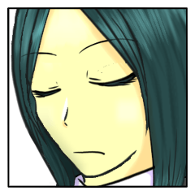
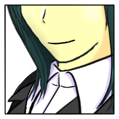
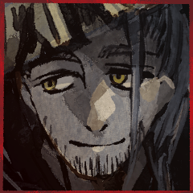

メインフェイズ サイクル2
メインフェイズ サイクル2 百々坂 瞠
百々坂 瞠
問答の声は絶えて、あるべからざる月の下に、二人の忍びは目を凝らし。
百々坂 瞠
やがて、堅洲の里を覆う木々の落とす影の中に、ひとつの白点を見つける。
百々坂 瞠
傍らにそう問うと同時に、駆け出している。当たり前についてくることを前提にして。
百々坂 瞠
方角を即座に判断し、獣道を当然に悟り、木々を足場に。
百々坂 瞠
その中で見て取った白点の正体は、見知らぬもの。
爾甁粢 野葛
不意に現れた影を見て取るや、矢をつがえた弓を向ける。
次なる動き次第では、即座に急所を貫くことも辞さぬ構え。
爾甁粢 野葛
「…比良坂の――儀式の異物か。何用だ。
お前たちの『姫君』なら、とうに戻った筈だが。」
百々坂 瞠
月光を浴びて煌めく鏃を、木の上から見下ろす。
百々坂 瞠
「留めようとしたところで、留められる子でもあるまい。あの子自身がそう望まないのなら」
爾甁粢 野葛
「…分かっていながら、来たと言うのか？
何の企みかは知らないが…碌なモノではあるまいな。」
向けた矢の先は、未だ振れることなく。
真っ直ぐに、その眉間を狙い続けている。
爾甁粢 野葛
「もう一度問う。
何用だ、比良坂の女。」

百々坂 瞠
「用などない……いや、たった今なくなったと言ったら？」
爾甁粢 野葛
「……信じるには値しないな。
言葉を捏ねるのは、お前たちの得手だ。」
ギィと、弓が軋む。
「その様にして、要の部分をはぐらかすままではな。」
百々坂 瞠
張り詰める弓に反するように、口元が弧を描く。手元が緩やかに動く。

百々坂 瞠
「いや、いや。
流石は堅洲で、比良坂（われわれ）と付き合ってきただけはある。
実によく私たちのことを理解しているな」
爾甁粢 野葛
「……お前たちが、そうさせたのだ。」
百々坂 瞠
「そこから学び取るべきを学んだのは、まぎれもなく貴殿らの機知だよ」
百々坂 瞠
「そうだな。それに敬意を評して、お望み通り真の目的を伝えよう」
百々坂 瞠
拍手を崩したまま中空にあった手が、やおら懐へ向かう。
爾甁粢 野葛
…その正体を視認することすらせず。
懐から腕が抜かれると見るや、矢が放たれた。
百々坂 瞠
そうだ。仮にも忍び同士。いかに抜き打ちの名手とて、既につがえられ引き絞られた弓の速度になど敵うものか。
百々坂 瞠
それに応対するのは、動きを伴うものではない。
百々坂 瞠
情報判定を行います。指定特技は罠術、目標は野葛さんの秘密。
百々坂 瞠
2D6>=5 （判定：罠術） (2D6>=5) ＞ 4[1,3] ＞ 4 ＞ 失敗
百々坂 瞠
じゃあこのまま続けます。振り直しありません。
百々坂 瞠
だが相対するは堅洲一の弓の名手。その矢を捕らえるに、姦計すら遅い。
爾甁粢 野葛
「…お前たちのやり口は知り尽くしている。
大仰に舌と手を動かす時には……常に別の目的を隠している。」
百々坂 瞠
すぐさま回避に転じてなお、完全に躱すには至らない。
風と熱が頬を薙ぎ、流れ落ちる一筋の赤を感じる。
爾甁粢 野葛
言葉を交わす内にも、既に二の矢はつがえられて。
体勢を崩したその身体に、狙いを付ける。
爾甁粢 野葛
「退け、比良坂の。
異物のまま、この地で果てたくは無いだろう。」
百々坂 瞠
「これは完敗だ。我々は自慢の観察力さえも、貴殿らにまんまと盗まれたと見える」
百々坂 瞠
それは必ずしも、技だけに出た言葉ではない。
読めないのだ。その仮面の奥が。物理的な遮蔽などいかようにも掻い潜るはずの、比良坂の諜報の技が。
爾甁粢 野葛
「……ふん。
やはりお前は、あの暴れ馬のような『姫君』とは違うな。
良く知る相手ならば、俺が譲る道理は無い。
そのように、入念な準備をして来たのだ。」
百々坂 瞠
それが八十神を担う堅洲の勇士の格か。
あるいは、……その一機一機を織ったここにあらざる里のものたちの祈りが、彼とともにあるのか。
百々坂 瞠
「まったく否定のしようがないな。あの子のことともども」
百々坂 瞠
「……だが、これでも最低限の目的は達したさ。
お言葉に甘えて、退散するとしよう」
爾甁粢 野葛
「やがて、全てが潰える。
異物であれば異物らしく、大人しく見ているが良い。
すぐに明らかになることだ。」
爾甁粢 野葛
変わらず、矢はつがえたまま。
その身体から狙いは逸らさずに。
百々坂 瞠
「ただ潰えずに、ここで叶うものもあるというだけの話だ」
百々坂 瞠
「私はな、当代の八十神よ。
ここにいるのが、貴殿なのかあの子なのかさえ見当がついていなかったとも」
百々坂 瞠
「ひとつ、その人柄を見ておきたいとな。
『八千矛』はなかなかいい男だったとも。では貴殿は？ そう思ったんだよ」
爾甁粢 野葛
「挑発は無駄だ。
男女の別や人格など、何をも決するものでは無い。
俺の目的は、儀式の始まりから不動のままだ。」
爾甁粢 野葛
「……もう行け。
お前たちと話を続けると、何を謀られるか分からん。
拒むのなら…ここから先は、言葉の他で語ることになる。」
百々坂 瞠
「名残惜しくはあるが、そうさせてもらおう。
十分に情報は得たとも」
百々坂 瞠
「そうまでして憎むものを、この場で撃たずにある。
見た目によらず、随分と口数が多い」
百々坂 瞠
「そして、それらすべてを知られてなお、この私が上回れずにある」
百々坂 瞠
言うが否か、木を飛び移り、行く先は闇の中。
爾甁粢 野葛
静寂のまま、鏃の先が影を追う。
闇の中を追って、気配の一切が消えゆくまで。
GM
舞台に在るはずのない者が、舞台の上に彼らを観た。
GM
※背景「不忍」の効果により、野葛の居所が瞠の手に渡りました。
メインフェイズ サイクル2 葦原 名張
葦原 名張
使うかはともかく景気づけにシーン表振るか～
葦原 名張
2d6 (2D6) ＞ 7[3,4] ＞ 7
GM
7:祭壇。一切の明かりは消えて、人気はない。
葦原 名張
人気が本当になくなったので祭壇にしますか
葦原 名張
そうですね、その感じで入っていきます。
葦原 名張
ではお願いします。登場のふりはしますんで。
葦原 名張
空を渡った緋色の正体は火矢。つまり『八十神』のものだ。
葦原 名張
祭壇のそばへと落ちたこと、放たれたのが1本のみであることからも、攻撃として放ったわけではないだろう。
そもそも奇襲したいなら火など灯さない。
葦原 名張
となれば、目印だろう。
そう当たりをつけて祭壇へと腰かける。
葦原 名張
少なくとも『姫サマ』か『八十神』のどちらかがここに来るはずだ。
三榊 琴梨
そして、音もなく。
祭壇の、『八千矛』の前に現れたのは、
月に照らされなお目立つ、真白い姿の『姫君』。
三榊 琴梨
「……申し訳ございません。『八十神』に、してやられました」
葦原 名張
「やぁやぁ、『姫サマ』。ご無事なようでなにより」
葦原 名張
ぱん、と膝を打ち、腰かけていた祭壇から立ち上がる。
葦原 名張
「百々坂サンは、これだと多分『八十神』の方かな。どっち目当てで疾っていったかわからねぇが」
葦原 名張
「まぁなに、気に病むこともないでしょう。ここは堅洲の里で、『八十神』は地元だし」
三榊 琴梨
「ああ、お姉さま……お二人にも見えたのですね、『八十神』が」
三榊 琴梨
火矢が放たれたと同時、恐らく、『八十神』の術も解かれたのだろう。
二人ほどの忍びであれば、その瞬間が見えていてもおかしくはない。
三榊 琴梨
「いえ……それでも、わたくしの油断が招いたことです。
あのような輩に、いいようにされるなんて。
『八千矛』様がそう仰っても、わたくしはわたくしが許せません」
三榊 琴梨
ぎゅうと拳を握り締める。
表情に浮かぶ色は、明確に怒りであった。
葦原 名張
「おー、頼もしいね。武闘派の『姫サマ』だ」
葦原 名張
「それとも、”手荒な扱い”でもされたのか？『八十神』に」
三榊 琴梨
手荒な扱い。
……を、したのはどちらかというと自分な気がしたが、そもそもだ。
三榊 琴梨
「問答無用で攫うこと、”手荒な扱い”以外の何物でもないと思いますわ」
葦原 名張
「じゃあ『八十神』と話とかはしたのかい」
三榊 琴梨
「話、と呼べるほどのものではありませんでした。あんな一方的なもの」
三榊 琴梨
「……『八千矛』様の戦いに必要なのでしたら、お話ししますけれど」
三榊 琴梨
「いえ、でも、わたくし、儀式の成就を第一に考えておりますから」
三榊 琴梨
そう何とか言い切ってから、いやね、との言葉に、ちらと視線を動かした。
葦原 名張
「お、うんうん。俺ももちろんそうだ。ただまぁ、百々坂サンといいこの”月”といい、イレギュラーなことが多いだろ？」
三榊 琴梨
頷く。始まってから、イレギュラーばかりだ。
お姉さまのことに気を取られていたが、確かにこの、眩い月だって。

葦原 名張
「じゃあ、わざわざ『姫サマ』攫ってまでなにをしたかったのか、ってな」
葦原 名張
「しかも儀式の邪魔をしたいなら、それこそ攫ったままにでもしてりゃあいいのに、ご丁寧に火矢まで放ってご案内となると」
三榊 琴梨
唇が動く。言葉は紡がれない。
ややあって、口元は弧を描いた。
三榊 琴梨
「『八千矛』様は、とても思慮深くあらせられるのですね」
三榊 琴梨
「ええ、ええ。確かに、そうお考えになるのは当然です。
わたくしもあの瞬間、命の危険を覚えましたし……
正直なところ、どうして無事にここに帰されたのか、分かっておりませんの」
三榊 琴梨
「『八十神』の言葉からは、わたくしへの害意は感じられませんでした。
それもまた、……不思議なことなのですけれど」
葦原 名張
「ま、それなら大丈夫か。とすると、本当に誰もこうなってる理由を知らねぇかもなぁ」
三榊 琴梨
「ええ。仮に何か仕掛けてきたとしても、今度は攫われたりなんかいたしませんから」
三榊 琴梨
「理由……というのは、わたくしにはまだ見当も付きませんけれど」
三榊 琴梨
「聡明な『八千矛』様のことですから。
何か、思い当たることがあらせられるのではなくて？」
葦原 名張
圧がくるなぁ～。
じゃあ情報判定をしようと思います。
もう一度百々坂サンの秘密を調べましょうか。
GM
いいでしょう。使用特技はいかがなさいますか？
葦原 名張
2D6>=5 （判定：暗号術） (2D6>=5) ＞ 4[1,3] ＞ 4 ＞ 失敗
[ 葦原 名張 ] 忍具 : 3 → 2
葦原 名張
2D6>=5 （判定：暗号術） (2D6>=5) ＞ 7[1,6] ＞ 7 ＞ 成功
GM
お送りしました。咀嚼が済んだら続けてどうぞ。
葦原 名張
その言葉を真に受けたかのように、じっくりと思案する。
三榊 琴梨
半分は発破をかけていたが、半分は本心だった。
異常事態ばかりの儀式。それでもなお、『八千矛』の泰然自若としたこの落ち着きぶり、思慮深さには見習うべきところがある。
葦原 名張
「や、なんともまだわからんなぁ。なんせわかってることが少なすぎてな。ミステリーでもちゃんと登場人物全員から話を聞かないことにゃあはじまらんだろ？」
葦原 名張
「役目からすりゃあ、そりゃあ一番『八十神』が怪しいんだがな」
葦原 名張
「それを言うと、俺も探偵ってガラじゃあないな。この格好だし。信頼できない語り部ってやつかもしれん」
三榊 琴梨
「……そうですか。それは仕方がありませんね。
仰る通り、話も聞いていないのに全てを見通すなど、千里眼の持ち主でもないと難しでしょう」
三榊 琴梨
残念な気持ちが全くないわけではない。が、取り繕わず、分からないと素直に認めるところには好ましさを覚える。
三榊 琴梨
「わたくしも、みすてりぃは得意ではありませんわ。いつも最後に驚かされてしまいますの」
葦原 名張
「俺は得意だぜ。いつもタネあかしが楽しみでしょうがないからな。最後に驚かされないヤツって、むしろミステリー苦手なんじゃないか？」
葦原 名張
「一番盛り上がるところがわかっても楽しめるって、もうミステリーとは別の楽しみ方だろ」
葦原 名張
「……だが、この儀式においてはそんなことも言ってられねぇからな」
三榊 琴梨
「わたくしたちは、『八千矛』と『姫君』」
三榊 琴梨
「どんな謎があろうとも――成すべきことは、成さなくては」
メインフェイズ サイクル2 三榊 琴梨
三榊 琴梨
幼い頃から、その成就だけを目指してきた――多くのものを、投げ打って。
三榊 琴梨
そして今、琴梨は『姫君』としてここに居る。
三榊 琴梨
居るはずのないひと。眩い月光。『八十神』の不可思議な行動。
異常ばかりの儀式。
未だ、何も分からないが、
三榊 琴梨
ぎゅう、と襟を握り締める。着付けが崩れることも厭わずに。
その、胸の内。
三榊 琴梨
どんな謎があろうとも、どんなことが起ころうとも、
三榊 琴梨
例のアレの秘密を呪術で抜きたく、よろしくお願いします。
三榊 琴梨
2D6>=5 （判定：呪術） (2D6>=5) ＞ 9[4,5] ＞ 9 ＞ 成功
GM
では、琴梨さんと、情報共有で野葛さんにですね。
GM
お送りしました。咀嚼が済みましたら続けてどうぞ。
三榊 琴梨
力が篭められていた手は、やがて解かれる。
三榊 琴梨
「もう一度、わたくしに聞かせてほしいのです」
葦原 名張
「だからそのために……『八十神』を討つことだ」
葦原 名張
ちらりと目線を落とせば、力を込めたせいで乱れた着付け。
明らかに力の籠っていた手。
三榊 琴梨
「……わたくしは、それが聞きとうございました」
三榊 琴梨
笑う。
この男の底はまだ知れない。
けれど――ひとまず、信じようと思う。
三榊 琴梨
「一つ、わたくしからお伝えしなくてはいけないことがございます。
それを、あなた様が知るに値するかどうか……今一度、見極めさせていただきたかったのです」
葦原 名張
「……なるほど。よほど大事な話だってぇことはわかるな」
葦原 名張
「はは、いいや。そんだけ思い詰めて覚悟きめて伝えようってんだから、俺が信用できる相手かどうかは重要なこったろ」
三榊 琴梨
「ああ、でも……出来るのなら。
あなた様の知り得ること、お教えいただけたら嬉しゅうございます」
三榊 琴梨
「みすてりぃには情報収集が不可欠。でしょう？」
葦原 名張
「つまり、それだけの覚悟があるってことだな？」
三榊 琴梨
琴梨の例のアレの秘密と、名張さん所持・瞠さんの秘密の交換をお願いいたします。
GM
では、先に琴梨→名張の秘密の処理からします。
【秘密：百々坂 瞠】
あなたは何故自分がこの場に立っているのか、全く心当たりがないわけではない。むしろ、この場に立っていることで、あなたは確信した。自らの内側に感じる巨大な何かは神器だ。いつからか、あなたの内側には神器が封印されている。儀式『神楽八十神追』において、神器は八千矛によって封印が解かれる定めだ。ならば、あなたの配役は……。
あなたはプライズ『神器』を持つ。
あなたの本当の使命は『神器の封印を解いてもらうこと』だ。
三榊 琴梨
「……ああ、そうなのですね。
だからお姉さまは、ここに」
葦原 名張
「そして、これだけで判断することはできやしねぇのさ」
三榊 琴梨
「まだ、知らなければならないことが……
琴梨たちには残っています」
葦原 名張
「さっきの言葉に嘘はねぇ。それが『八千矛』の、俺の役目だ」
葦原 名張
「だからこそ俺たちはちゃぁんと知らなくちゃならねぇ」
三榊 琴梨
知らなくてはいけない。
知って、そして――それぞれの、成すべきことを。
メインフェイズ サイクル2 爾甁粢 野葛
爾甁粢 野葛
とりあえず、簡単な独白シーン後に百々坂さんに追い付いて話をしようかな。
シーン表は追い付いてからでも大丈夫です？ それとも先に振るべきでしょうか
GM
今回はシーン表にフレーバーの補助程度の意味しかないので。
爾甁粢 野葛
では、先に簡単にモコモコした後に振ってみることにします。
爾甁粢 野葛
――比良坂の女が去り行きて、すぐ後のこと。
今や周囲に気配はなく、静寂の中。
この場に長居をする理由は最早ない筈であったが。
爾甁粢 野葛
今しがたの目前で生じた出来事。
その有り様を思い返し、足を止める。
爾甁粢 野葛
――何かが、釈然としない。
さながら飛ぶように、迷いなく駆けて来たあの足取り。
いかなる罠が巡らせてるとも分からぬ中を、
まるで勝手知ったるが如きに構わず駆けあがって来た。
爾甁粢 野葛
無論、この地は比良坂の用意した箱庭。
多少の罠も潜る自信はあるだろう。それでも。
あそこまで畏れず、躊躇わず。
無闇やたらと駆けて来られるだろうか。
爾甁粢 野葛
そう考えたが故に、その後を追い駆けた。
獲物を追うのは狩人の得手。
踏み締めた跡を辿り、その背を求めて追い縋り。
百々坂 瞠
それは追いすがられていると見れば跳躍し、再び、あの時のように木の上へ。
振り向くその頬に、確かに『八十神』の刻んだ矢傷。
百々坂 瞠
その奥。
器に刻まれた微かなひびから、もはや隠し切れぬ巨大ななにものかの気配。
爾甁粢 野葛
「……『神器』が、人の形を取るとはな。
俺はあの場で、お前を計り知ることは出来なかったということだ。」
爾甁粢 野葛
つがえた矢を、樹上へ油断なく向ける。
相対する2者の光景は、先刻と変わりはなく。
百々坂 瞠
「むしろこの場で見抜いていることに恐れ入るよ、当代の『八十神』よ。
私自身でさえ、この場に至るまで計り知るなどできなかったことだ」
爾甁粢 野葛
「……知り得た理由を、教える積もりはない。
お前は、この儀式の要となる存在だ。
お前が『八千矛』へ渡ることが、儀式を終焉へ導くことになる。」
百々坂 瞠
「此度は我々の虚言をまで盗み取ったか？ 堅洲の勇者よ。
その志は評価しよう」
爾甁粢 野葛
「……虚言を弄するのは、お前たちの役目だろう。」
爾甁粢 野葛
「そもそもを言うならば、この儀式こそが虚ろなのだ。
抵抗を認めるなどと嘯きながら、その実は全てがお前たちの術中だ。」
爾甁粢 野葛
「……この儀式には致命の陥穽が存在する。
現に…我らの里から儀式に臨んだ先祖たちは、その全てが敗北を喫して来た。
幾千年もの昔から、まるで定められて来たかの如く。
力を誇り知恵を振るう選りすぐりの英傑たちは、見るも無惨に己の身だけを血の中に沈めて来たのだ。」
爾甁粢 野葛
「この儀式には必敗の仕掛けが組み込まれている。
『八千矛』に『神器』が渡れば、どうあがこうと『八十神』はお前たちには勝てない。」
爾甁粢 野葛
「それこそが、この儀式の正体なのだろう？
比良坂の異物――いや、『神器』の化身よ。」
百々坂 瞠
「まったく、やはり貴殿は実によく喋るな、八十神よ。
次代もこうであれば、次からは演目に朗誦を追加してもいい」
百々坂 瞠
「比良坂機関は国守の忍び。
その我々が、万が一にも国滅の可能性を残しておくとでも？」
爾甁粢 野葛
「…多弁の理由を少しは考えたらどうだ？
俺は今…お前への殺意に暴れ出しかねぬ昂りを、口から吐き出すことで抑えている。
安い挑発は、ただ破滅を招き入れることになるぞ。」
百々坂 瞠
「ならば、この場で私を射てみるがいいさ。簡単なことだよ」
百々坂 瞠
「野放しの神器。
未だ持ち主なき業物。
我々の策謀を打ち破り得るもの」
爾甁粢 野葛
「今この時においては…お前の存在こそが。
俺にとり、最も破壊するべき存在だ。
そのことに、何らの変わりはないが………」
爾甁粢 野葛
「…お前は言ったな？
『目的など、来た時に決めた』と。」
爾甁粢 野葛
「俺であろうと…かの『姫君』が居ようと構う所では無かったと。」
爾甁粢 野葛
「……『神器』が、俺に何の用向きを持つ？
かの『姫君』ならいざ知らず……だ。」
爾甁粢 野葛
「それを聞くために、俺は未だ弓を放たずにいるのだ。」
百々坂 瞠
「これはこれは。
我々は実に信用されていないな。あの場で話すべきはすべて話したというのに」
百々坂 瞠
「その言葉がなければ、私の方が聞き返していたところだ。
わざわざこの場まで私を追いかけてきた用向きをな」
爾甁粢 野葛
「…卑しくも、謀と罠を知悉する比良坂のことだ。
単なる慢心・弄びの一つと片付けることも出来た。」
爾甁粢 野葛
「だが、お前は『神器』なのだ。
お前が己の役割に従うなら…俺と出会う必要は無い筈だ。」
百々坂 瞠
「そうだな。ではもう少し深く話をしようか。
といっても、行き着く先は同じだ。私のあの言葉に嘘はない」
百々坂 瞠
「当初は確かに、私が探していたのは『姫君』だよ。
だがこの場にいないとなれば、もはや答えは一つだ」
百々坂 瞠
「貴殿にも告げた通り、あの子はその場に留めようとして留められるような子ではない。
十分に知っているとも」
百々坂 瞠
「して。
貴殿はあの子を『暴れ馬』と称したな」
爾甁粢 野葛
「……率直な表現だ。
あの娘は……檻に入れておける気性ではない。」
百々坂 瞠
「それを思い知るに至る何かがあった、ということだろう？
その上でこの場にあの子がいないのなら、もはや私がどうする必要もない」
百々坂 瞠
「貴殿と私が出会ったのは完全なる偶然だが、もはや出会ったとして何をする理由もなかった。
そこで一つ、人柄でも見ていくかと思いついたんだよ。
あの場でな」
爾甁粢 野葛
「……ただ用が済んだことで解放しただけだ。
それ以上のことを、詳らかに明かす積もりはない。」
爾甁粢 野葛
「人柄などと、な。
関心も無い事を言うのは止めろ。
ただ殺すために飼う者の内面など、興味を抱く理由もある筈が無い。」
爾甁粢 野葛
「この矢が、お前を狙い続けていることを忘れるな。
俺は、お前のみが持つ企みを問うているのだ。」
百々坂 瞠
「腹を割いてみれば、美しい糸のひとつもあるかもしれん。
いずれ殺されゆくものだろうと」
百々坂 瞠
そう言って、真っすぐに自らを狙い澄ます鏃を見る。
百々坂 瞠
「貴殿に、『八十神』としてでもなく、堅洲のものとしてでもなく」
百々坂 瞠
「貴殿はその弓が自らを欺き、何かを謀ると思うか？
人の手にある道具というものが」
百々坂 瞠
「さて？
何だろうな。比良坂としてのものか、儀の部外者としてのものか、神器としてのものか」
爾甁粢 野葛
「……道具は、謀を用いない。
丹念な手入れにはその様に応え、怠れば手に握る者に因果を返す。
ありとあらゆる道具に、例外はない。」
爾甁粢 野葛
「…それが、神ならぬ者の手に依る道具であるならば。」
爾甁粢 野葛
「そして……神なる存在は、常に贄を求める。
『神器』よ、お前も、そうだと言うのか？
俺が答えを求めるのならば、貢ぐものを用意せよと。」
百々坂 瞠
「貴殿が知る五大流派の一。
謀の忍びは、只でその答をくれてやるようなものだったか」
爾甁粢 野葛
「……お前の作法に乗ってやる。
それが、我々の大事へと繋がるのならな。」
爾甁粢 野葛
人差し指を立て、口元へと寄せて。
ぼそりぼそりと、言葉を紡ぐ。
先祖の一人が残した憑依の諜報術。
その術理を、この場で真似て真実を読み取ろうと。
爾甁粢 野葛
情報判定をします。
憑依術で、琴梨さんの秘密を抜きます。
爾甁粢 野葛
2D6>=5 （判定：憑依術） (2D6>=5) ＞ 4[1,3] ＞ 4 ＞ 失敗
爾甁粢 野葛
ちょ、ちょっと悩みます ちょっとお待ちを
[ 爾甁粢 野葛 ] 忍具 : 2 → 1
爾甁粢 野葛
2D6>=5 （判定：憑依術） (2D6>=5) ＞ 11[5,6] ＞ 11 ＞ 成功
GM
おめでとうございます。では野葛さんに琴梨さんの秘密をお送りします。
GM
お送りしました。咀嚼が済みましたらRPの再開をお願いします。
爾甁粢 野葛
当然のこととして、純白の被り物に変化は見られず。
爾甁粢 野葛
「……哀れな、娘だ。」
小さな呟きが漏れるのみ。
百々坂 瞠
「…………？」微かに目をすがめて、その呟きを見下ろす。
爾甁粢 野葛
「……良いだろう。
『神器』よ、お前に供物を与える。
役割に則り、俺に恵みを寄越せ。」
爾甁粢 野葛
野葛の持つPC2の秘密と、百々坂さんの持つアレの秘密の交換を提案したく思います。
GM
アレの秘密は情報共有で琴梨さんにも渡りますね。
百々坂 瞠
「賢明な判断だ、『八十神』よ。
だが貴殿は、……もう既に辿り着いているさ。
先の答え、実に明快にして、真を突いたものだった」
百々坂 瞠
「ありとあらゆる道具に例外はない。
日用の道具、武具、そして肉体までも私はそう考えている」
爾甁粢 野葛
「…………」
下賜された『答』の一つを咀嚼し、飲み込み。
百々坂 瞠
苦渋に歪むその手前。
先までの威勢を減じて、どこか力なく。
爾甁粢 野葛
「…この里に鬼が棲まうというなら……
それは、お前たちのことだ。比良坂め。」
百々坂 瞠
その笑い声も、先のそれにはほど遠く。
どこか絞り出したような気配。
爾甁粢 野葛
「……気が削がれた。
今は見逃してやる。何処へでも去ると良い。」
爾甁粢 野葛
「いずれにしろ……
すぐにまた、相見えることになるのだからな。」
百々坂 瞠
「……今ばかりは礼を言おう。
お陰で行くところができたばかりだ」
百々坂 瞠
言うが否か、何処かへと跳ぶ。
先までの力なき様子とは打って変わって、その一足だけは矢の如く。
爾甁粢 野葛
その様を見て取るか、或いは見ずか。
隠鬼の姿も、風の如く失せて。
闇と静寂だけが、その場に残された。
GM
手繰り寄せたその先に、果たして何が繋がるものか。